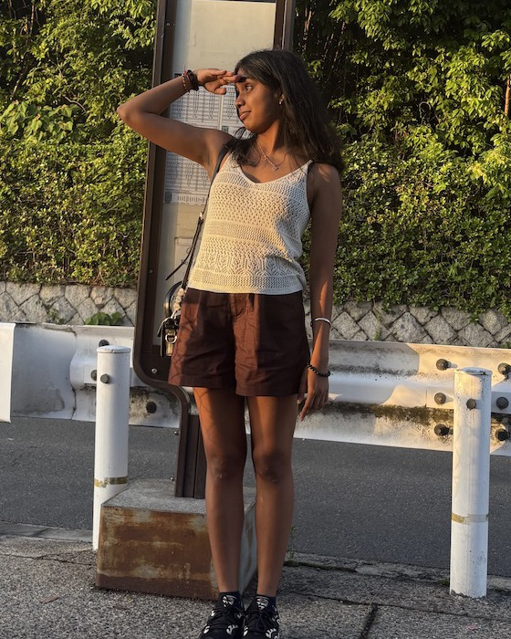
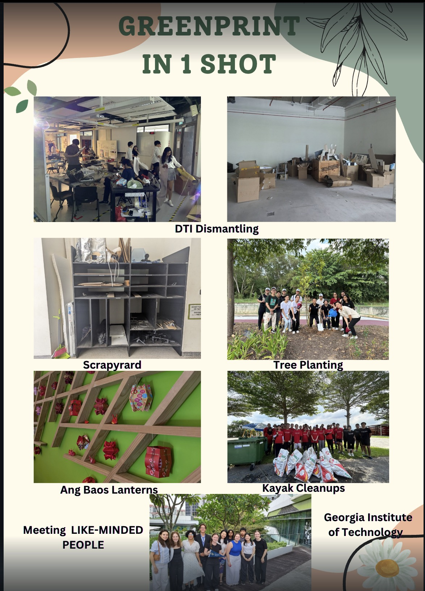
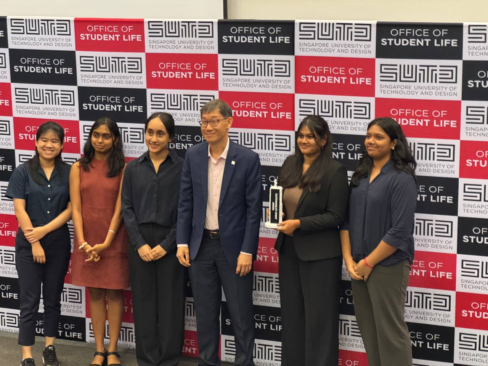
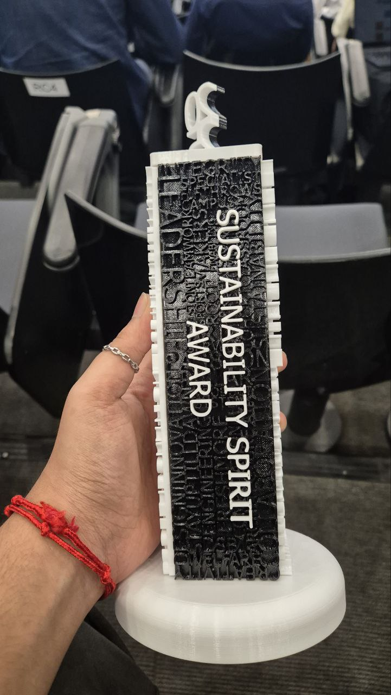
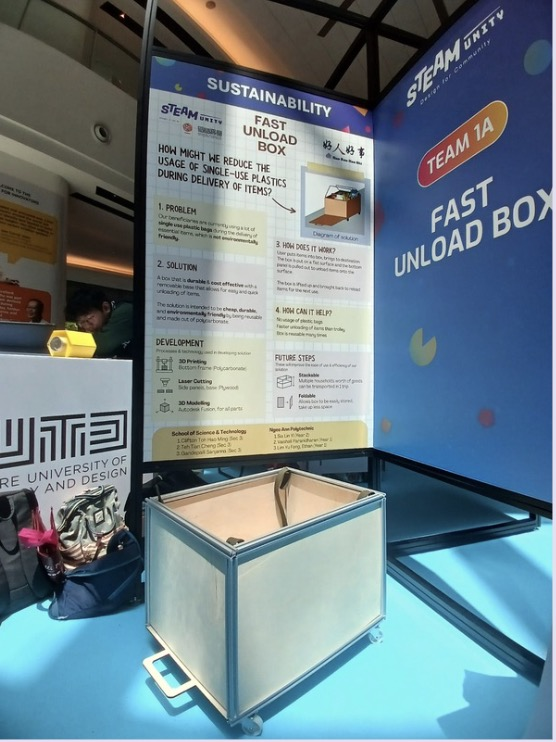
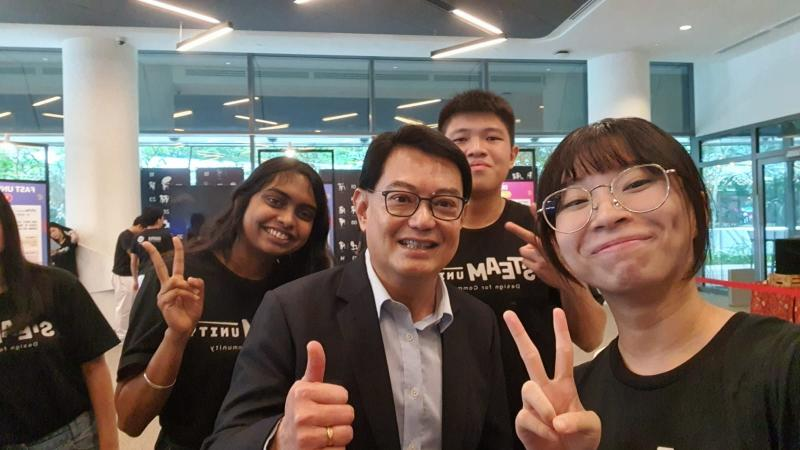
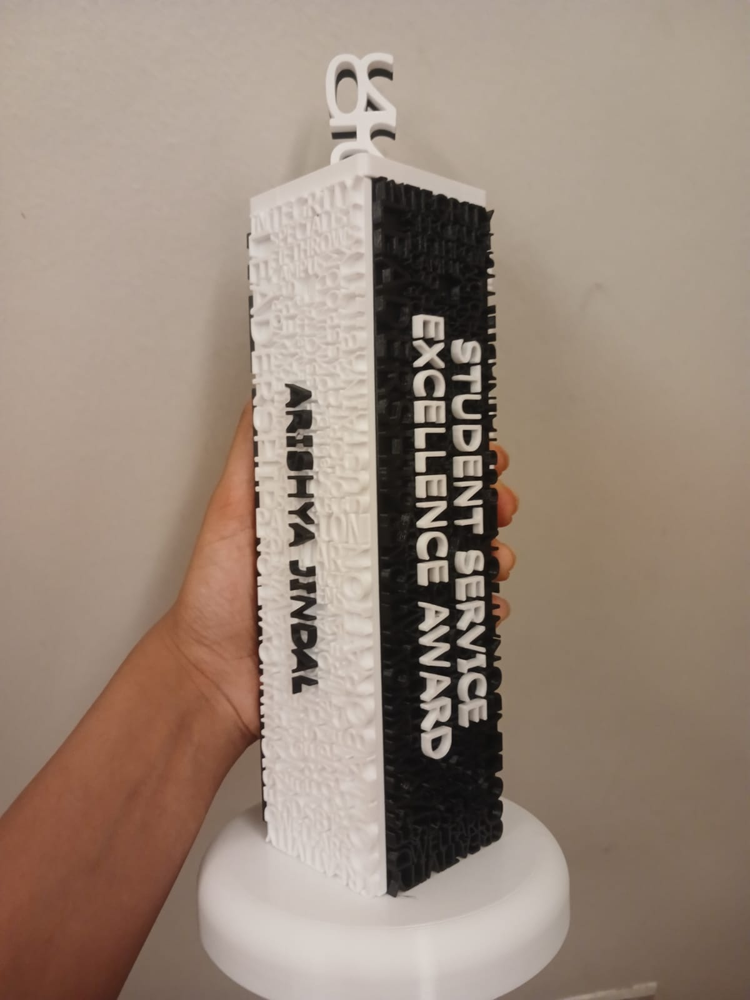
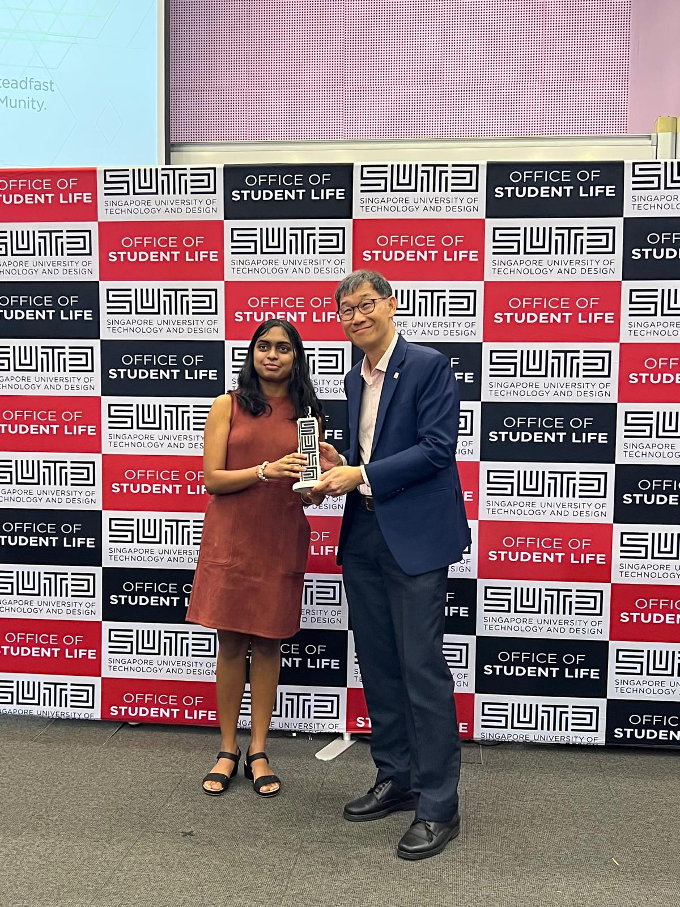

Selected work
SUTD · Class of 2027 · Singapore
Computer Science × Design × Artificial Intelligence
I build AI-driven automation, data pipelines, and full-stack applications that solve real-world problems.
● Currently interning at Aumovio.
About
I'm a third-year Computer Science and Design undergraduate at SUTD, minoring in Artificial Intelligence.
My projects look varied, from transport prediction to medical wearables, automotive requirements and sign language, but they follow one pattern: find the tedious, error-prone or opaque part of a real system, and build something that makes it automatic, measurable or understandable.
I care about talking to the people who'll actually use the thing (120+ interviews for CareTech taught me more than any spec document), and about being able to prove the result with a number.
Outside of work I run, cycle, and volunteer on sustainability projects, which is also where several of these builds started.

+ Add profile photoExperience
Co-Curricular
Sustainability work and mentoring outside the classroom — where several of my projects started.

+ Greenprint overview
+ Team photo
+ Award photo
+ Prototype board
+ DPM presentation
+ Award photo
+ With SUTD presidentRecognition